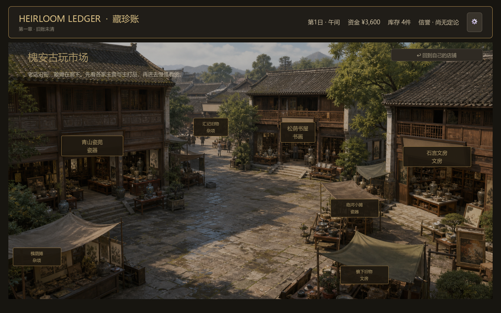

DESIGN
证据先于答案
照片、存根、账本和人的意愿各自只能证明它有资格证明的部分；证据不足本身也是一种有效的玩家判断。
一间小店，一本没有价格的旧账，以及一群带着不同记忆回来的人。玩家要做的，不是猜中系统答案，而是在证据不完整时决定自己愿意承担什么。

把古玩经营从数值菜单拉回到具体的人、物件和一笔需要署名的处理方式。
从柜台到古玩街，从私人判断到夜间往来，界面让调查节奏自然发生在场景里。



把“世界会变化”拆成可验证的数据和边界，再让表达层服务于玩家判断。
照片、存根、账本和人的意愿各自只能证明它有资格证明的部分；证据不足本身也是一种有效的玩家判断。
资金、库存、物件判断、关系、记忆和剧情旗标由核心状态保存；表达层不能临时改写权威世界。
第一章用 10 天、8 名重要人物和 28 件器物组成一条可完整试玩、可追踪证据与收束的内容切片。
“暂时落在手里的东西，并不因此成为自己的。”
— Chapter 01 · 旧账未清